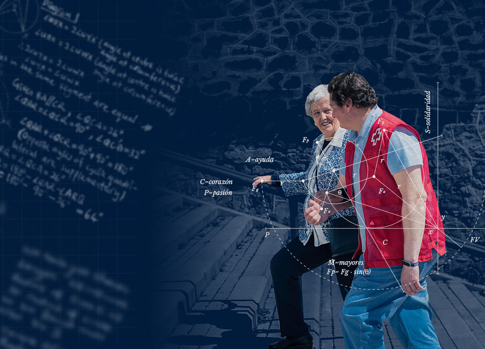

CAMPAÑAS

Sus Derechos en Juego
¡Necesitamos 115.000 juguetes para niños y niñas! Desde Cruz Roja Juventud estamos tratando de conseguir que los niños y niñas que se encuentran en familias con dificultades puedan disfrutar de juegos y juguetes.
Leer más

#LafuerzaV
Descubre una energía inmensa que nace de las personas y está por todas partes. Descubre la Fuerza del Voluntariado.
Leer más

#UnPaisajeEnLaCazuela
"Un paisaje en la cazuela” es una serie documental de Cruz Roja Española para fomentar una alimentación consciente en la Sociedad.
Leer más
VER MÁS CAMPAÑAS
PROYECTOS PARA DONAR

Ayuda Crisis en Ucrania
DONA

Ninguna persona mayor sola
DONA
Plan Responde de Cruz Roja frente al Coronavirus
DONA
VER MÁS PROYECTOS